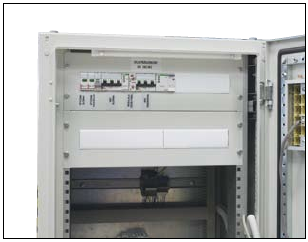

Relay-based ATS systems
We offer you slow relay-based ATS systems in network-tonetwork
version in overt or covert backup configuration, and
a network-to-generator for overt backup. Our ATS system can
control both contactors and circuit breakers equipped with
motor drives, and can be supplied with or without them.
Installing the system is possible in two variants:
- on the mounting plate (e.g. in SWN cabinet made by ZPAS or
in any switchgear that has enough space on the plate),
- on 19" frame using a PS-3U panel made by ZPAS.
The systems provide for signalling the presence of voltage
across individual power lines and signalling current power
line that is supplying takeoffs. Supply is switched from the
primary power supply to the backup and then returns to the
primary one, once the set delay time has elapsed. The delay
is set separately for backup switching and return switching.
Switching to backup network or power generator supply is
triggered by voltage loss in the primary network or voltage
asymmetry in at least one phase of the primary network. For
the network-to-generator configuration, also UPS is provided
to power the devices that control the ATS system in the event
of voltage loss in the primary power supply (in the version
where the system is integrated with the PS-3U panel, UPS is not
installed inside the panel).
